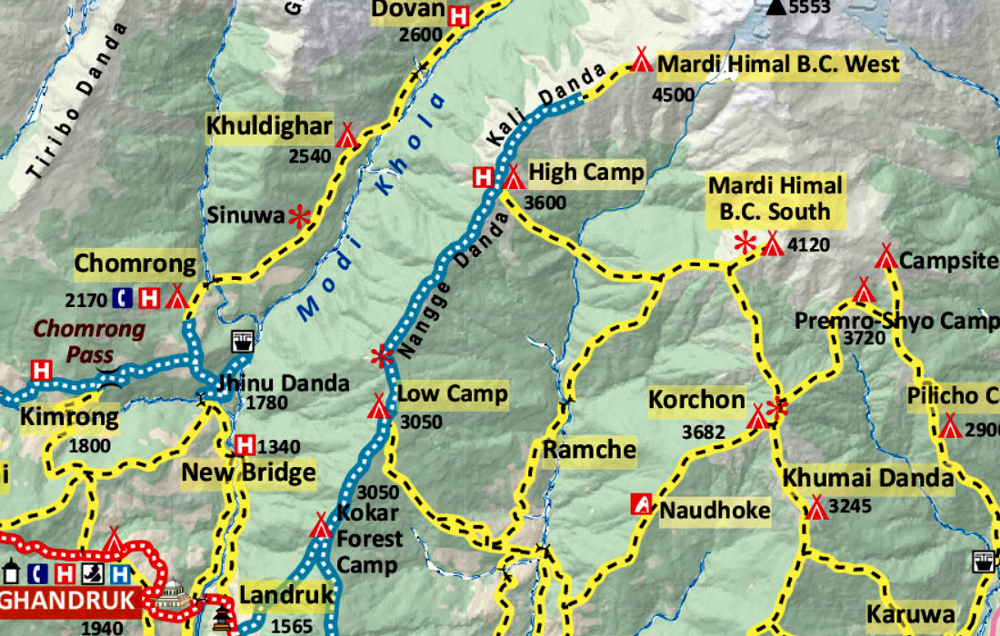

A Beautiful Short Trek in the Annapurna Region
Mardi Himal Trek is one of the most beautiful short treks in Nepal, located in the Annapurna region. It is famous for peaceful trails, green forests, mountain views, and close views of Machhapuchhre, Annapurna South, and Hiunchuli.
This trek is perfect for beginners and travelers who want a short Himalayan adventure with amazing scenery, village life, forest trails, and sunrise views from Mardi Himal View Point.
Mardi Himal trail has basic tea houses and lodges available in most stopping points. Rooms are simple but comfortable. During peak season, booking early is recommended because lodges can become full.
| Place | Lodging Information |
|---|---|
| Pokhara | Hotels, restaurants, and full travel facilities available. |
| Forest Camp | Basic tea houses and simple meals available. |
| Low Camp | Lodges with mountain views and local food available. |
| High Camp | Basic lodges available, but rooms may be limited in peak season. |
| Siding Village | Local homestays and simple accommodation available. |
Food options are available in tea houses along the trail. The price increases as altitude increases because goods are carried to higher areas.
This roadmap shows the route towards Mardi Himal, including Pokhara, Kande, Forest Camp, Low Camp, High Camp, Mardi Himal View Point, and Siding Village.

Watch trekking videos and adventure vlogs on Trek Hunters YouTube channel.
Visit YouTube Channel